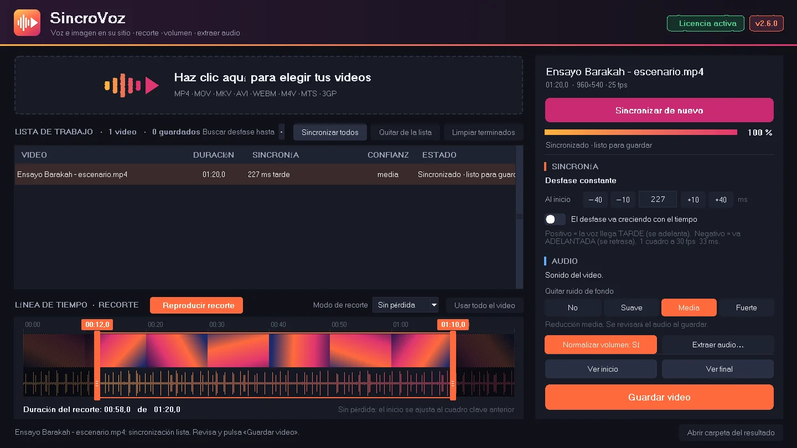
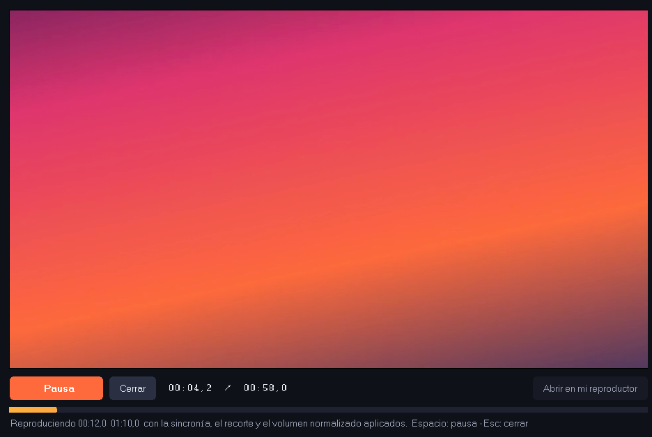
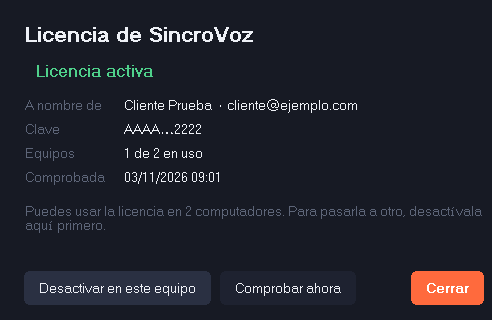

Sincronización automática
Analiza imagen y sonido y calcula el desfase al milisegundo. También corrige el desfase que va creciendo a lo largo del video.
SincroVoz detecta y corrige automáticamente el desfase entre la voz y el video, sin perder calidad de imagen. Arrastra tu video, pulsa un botón y listo.
Para Windows 8.1, 10 y 11 · Descarga la prueba gratis y úsala con tus videos

Así se ve un video con la voz atrasada. Activa el sonido, arrastra el control y después deja que SincroVoz lo corrija.
Demostración ilustrativa. En la app, el cálculo se hace sobre tu video real.
Pensado para músicos, docentes, creadores de contenido y cualquiera que grabe con el celular o la cámara y descubra que la voz no coincide con la boca.
Analiza imagen y sonido y calcula el desfase al milisegundo. También corrige el desfase que va creciendo a lo largo del video.
La imagen no se vuelve a comprimir: queda idéntica al original. Solo se ajusta el audio, y tu archivo original nunca se modifica.
Arrastra los tiradores sobre las miniaturas y la forma de onda, y reproduce el tramo elegido antes de guardar.
Reduce ventiladores, aire acondicionado, zumbidos y soplido, protegiendo la voz y los instrumentos. Tres intensidades.
Un botón deja el audio al nivel recomendado por YouTube, Instagram, Facebook y TikTok (−14 LUFS), sin picos que distorsionen.
Guarda el sonido en WAV de 24 bits para editar, en MP3 de 320 kbps para compartir, o como copia exacta de la pista original.
Elige una herramienta y juega con ella.
El ventilador y el zumbido tapan la voz.
Suelta tu video aquí
Leyendo la imagen…


Descárgalo y pruébalo gratis con tus propios videos. Cuando te convenza, compra la licencia para guardar.
¿Primero quieres probarlo? Descarga la versión de prueba
Todo: cargar, sincronizar, recortar, quitar el ruido, normalizar y ver el resultado en el reproductor integrado. Para guardar el video corregido y extraer el audio necesitas la licencia.
No. Todo el proceso ocurre en tu computador. SincroVoz solo se conecta a internet para activar y confirmar la licencia, y en ese momento envía únicamente la clave de licencia.
No. La imagen se copia tal cual, sin volver a comprimirla. Solo se ajusta el audio. Si eliges el recorte «Exacto», la imagen se procesa en calidad visualmente idéntica.
La licencia funciona en 2 computadores. Para usarla en uno nuevo, desactívala en el equipo anterior desde la ventana de licencia y escríbenos a soporte para liberar ese lugar. Después actívala en el nuevo con la misma clave.
Está en el correo de compra. Si no la encuentras, escríbenos a soporte con el correo con el que compraste y el número de pedido.
Sí. Consulta la política de reembolsos.
Pruébalo gratis y compra la licencia solo cuando te convenza.